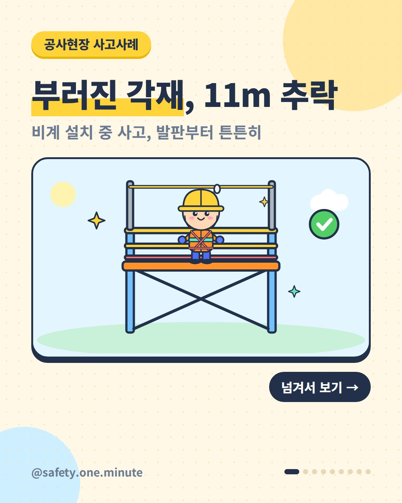
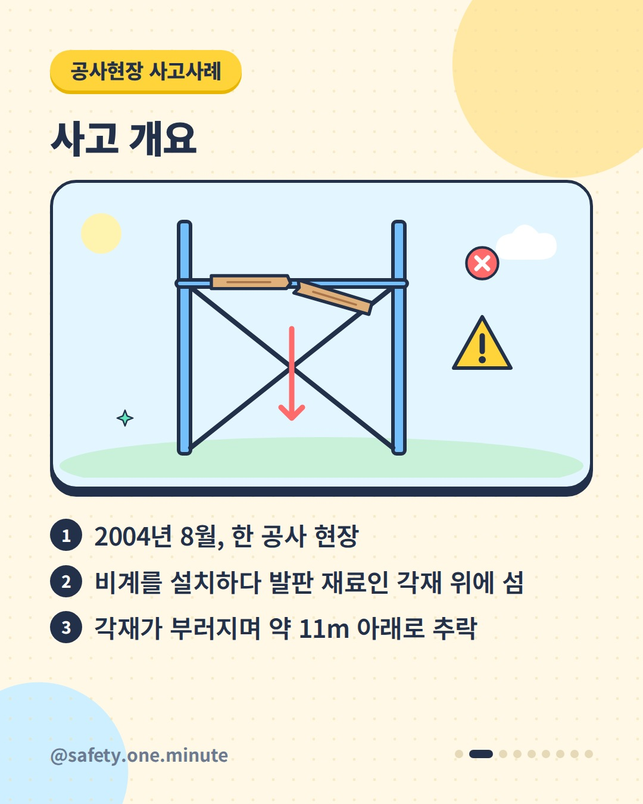
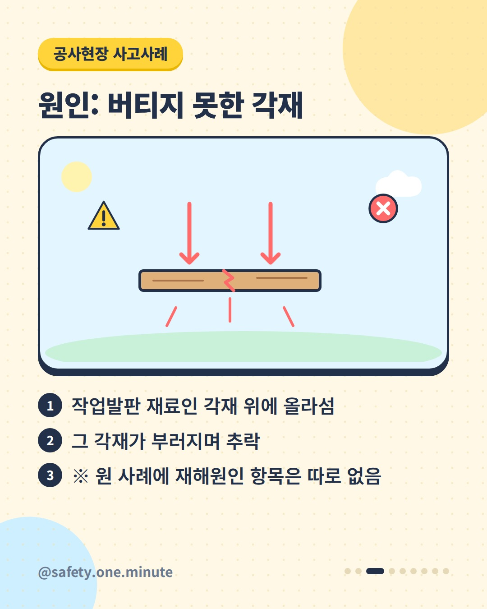
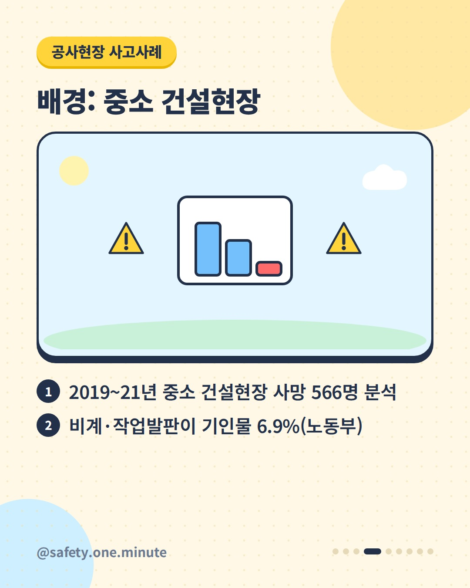
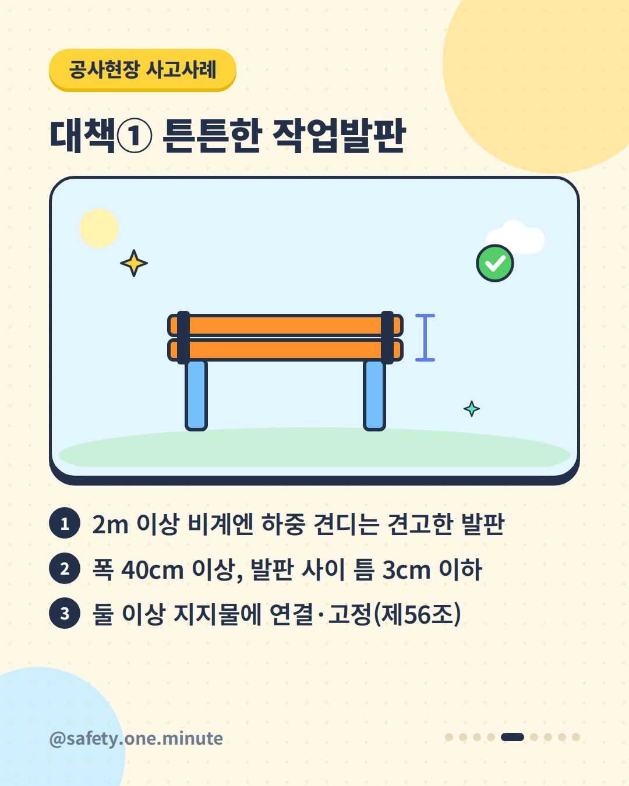
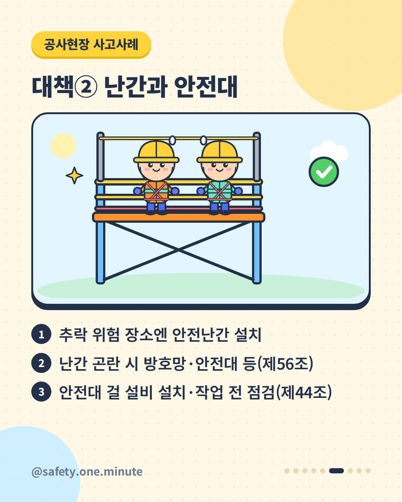
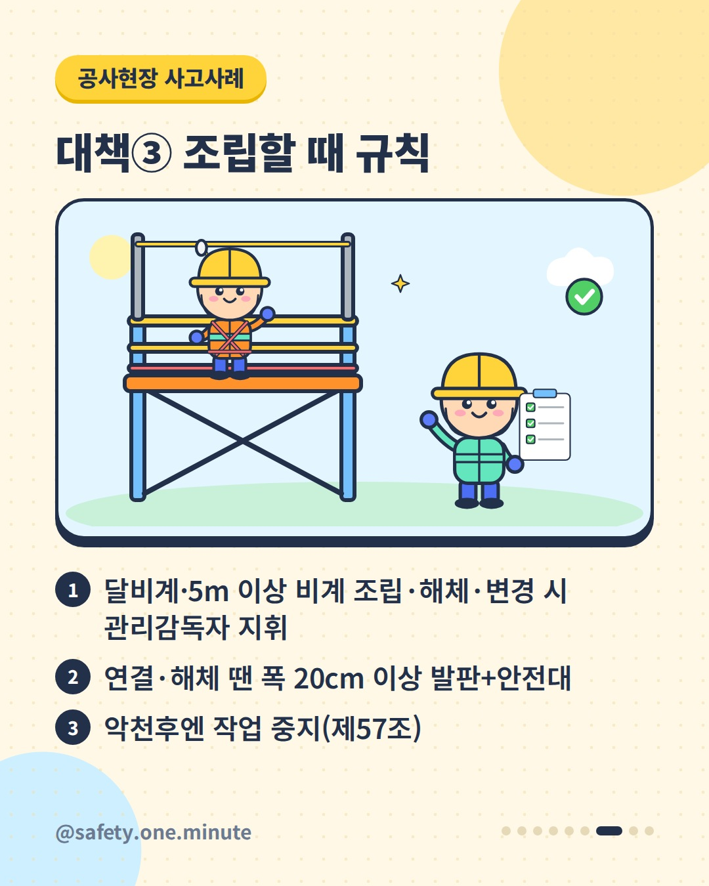
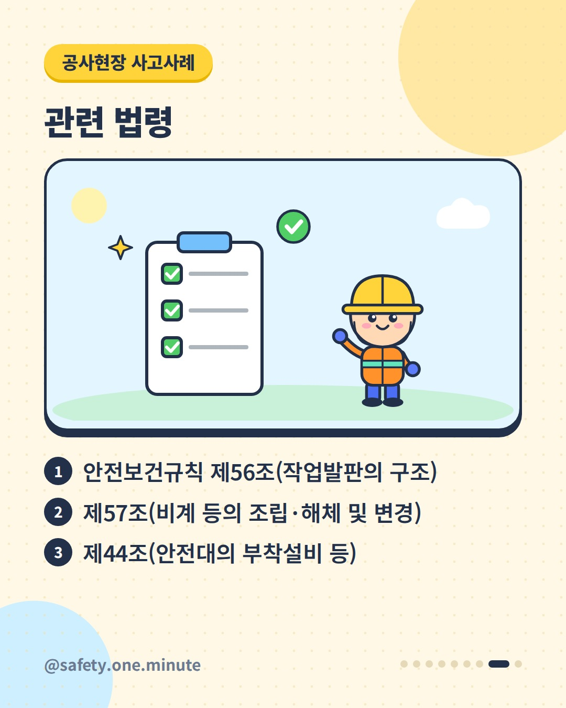
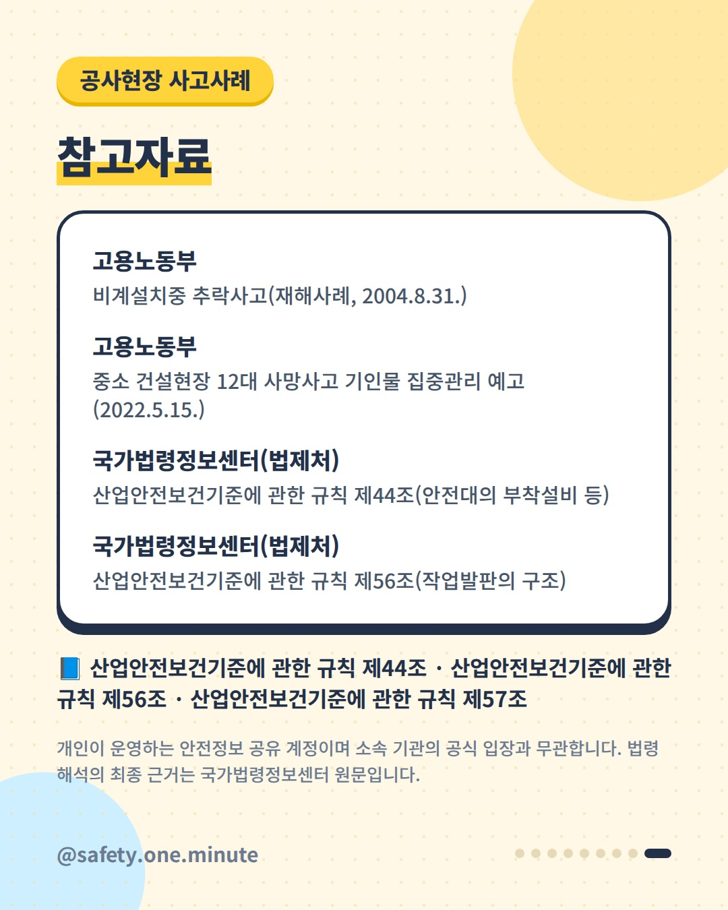

부러진 각재, 11m 추락 — 9장 (4:5)









캡션
발을 디딘 그 나무 한 장이 버텨 줄까요? 고용노동부가 공개한 재해사례입니다(2004년). 한 공사 현장에서 비계를 설치하던 작업자가 작업발판 재료인 각재 위에 올라섰는데, 각재가 부러지면서 약 11m 아래 바닥으로 추락했습니다. 고용노동부가 2019~2021년 중소 건설현장 사망자 566명을 분석한 결과(2022), 비계·작업발판은 사망사고 기인물의 6.9%였습니다. 현행 산업안전보건기준에 관한 규칙은 이렇게 정하고 있습니다. ① 높이 2m 이상 비계의 작업발판: 하중을 견디는 견고한 재료, 폭 40cm 이상·틈 3cm 이하(외줄비계는 별도 기준), 둘 이상의 지지물에 연결·고정(제56조) ② 추락 위험 장소엔 안전난간, 곤란하면 추락방호망·안전대 등 조치(제56조), 안전대를 걸 설비 설치와 작업 전 점검(제44조) ③ 높이 5m 이상 비계 조립·해체·변경 시 관리감독자 지휘, 연결·해체 작업은 폭 20cm 이상 발판과 안전대 사용, 악천후 시 작업 중지(제57조) ※ 사고 당시 법령과 현행 법령은 다를 수 있습니다. 세부 요건은 법령 원문(2025.9.1. 시행본 기준)을 확인하세요. 출처: - 고용노동부 – 비계설치중 추락사고 재해사례(2004) - 고용노동부 – 중소 건설현장 12대 사망사고 기인물(2022) - 국가법령정보센터(법제처) – 산업안전보건기준에 관한 규칙 제44조·제56조·제57조 개인이 운영하는 안전정보 공유 계정이며 소속 기관의 공식 입장과 무관합니다. 법령 해석의 최종 근거는 국가법령정보센터 원문입니다. #비계 #작업발판 #추락사고 #안전대 #건설안전 #사고사례